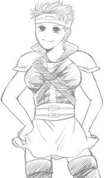
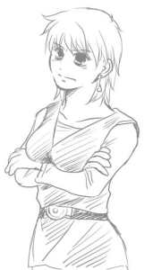

嬉しく受け取っておりますｖ
あ、更新履歴にはとくに書かないですが、リンクコーナーに相互リンクサイト様を貼らせていただきました。リンクページは本館サイトでまとめて…と思っていたのですが、やはり特にこのような特殊サイトへ直接貼っていただいている方には感謝の意を込めてということで……。今後も、もし、リンクを貼っていただいた場合、貼り返しさせていただきます！

{kind=link}
唐突にこれはなんだ、という話。
にょたボーレなんぞたわむれに描いてみました。描いてみました、って言われても困るわな、という感じだけど。
最近、ツイッターで野城さんとにょた話をさせていだいてまして滾ったのでちょっと語ろうかなと。なんでボーレにょたなんだっていう話ですが、まったく深い意味はありません。女体化はアイクのみならず、性転換ネタとして全般的に好きなのです、私。傭兵団みんな、なんかにょたってパニック！ というドタバタコメディもいいですね。
キルロイさん、シノン、ヨファあたりはまあしっくりくるんじゃないだろうか。乙女とツリ目ツンデレポニテとロリっ娘でどうだ！ オス母さんもママン！と胸に飛び込みたくなるような感じになるかも。セネリオは素で男の娘なので置いておいて。……ボーレとガトリーのにょたはどうなんだ、ということで……こりゃミスト卒倒、なことになるかとｗｗ そんなわけでためしに描いてみたのがにょたボーレ。案外いけるかもしれないと思った自分が情けない。もっとマッスルに描いたらまた違うと思うけど。野城さんいわくボーレとガトリーは案外ノリノリでやるんじゃないかということで…ｗ ミニスカ穿いてニーソもばっちりだね！！ ここまで描いたら傭兵団にょたを全部描かねばな……ｗ セネリオとキルロイさんは描いたことあるぞ！！ っていうか、セネリオは男の姿ではなくにょたを最初に描いた！！ シノアイイラストもにょたアイクでしか描いたことないし！！
…これはかなり重症ですね。どんだけにょた好きなのっていう。
私のにょた歴は小学生からですから！！
以下よりぽつぽつとそんな語り。他ジャンルにょた絵入るので注意！

{kind=link}
これはなんぞ、という感じですが、ドラクエ4男勇者のにょた。女勇者がいるのにわざわざ男勇者をにょたらせるところがミソです。小学生だった当時の私になぜそんなことをしたのか問い詰めたい。リアルチラシの裏に100ページほど描き続けていたドラクエ4だらだら日常漫画があるんですが、そのうち、ゆうしゃくんがにょたる場面が2、3回ある。街角で変な薬を変な男に飲まされていたずらされるというネタだったり、マーニャがいたずらでその薬を飲ませて…とかそういう。当時、やおい萌えやエロには目覚めていなかったのに女体化にはいち早く開眼していた。
そういうドタバタコメディが好きだったのか、そういう素質があったのかどうかという…。
…TS系のネタが好きなんだろう。性転換ネタとか、男の子として振舞っている女の子とか。
アイク受で女体化やるまでは後天性が主だった。後天性は戸惑いとか、それから展開していくドタバタさかげんが好きです。エロありなら男のときとの差異とか…。
アイク受でにょた始めてなぜか先天性が主になった。カプ萌え→にょた、の流れなのかもしれない。あのカプの場合、アイクが女だったらどういう恋愛関係になるのかっていう。ジャンルとしては厳密にいうと、先天性はパラレルに属するのかもしれない。もしアイクが女だったらどういう話になるのかということで。
しかし、後天性もいずれやりたい！！
アイクは女体化的においしすぎる。
なんといえばいいか……。見た目は女っぽくなく、男の子なんだけど、ちょっとどうにかしたらかわいいかもしれない、という塩梅。それがにょた的カスタム心をくすぐる。あの衣装のまんま体だけにょたにすると男装の麗人チックでまた萌える。戦う女子、な感じになる。傷痕萌えとか、盛り込める。ファザコンなのもいい。何度やられても立ち上がる的な性格で、虐めたい感じ。虐めるもよし、愛でるもよし。
というわけで、とりとめもないまま終わります。
またどわーっと語るかもしれないです。
にょた絵チャやりたいなあ！！